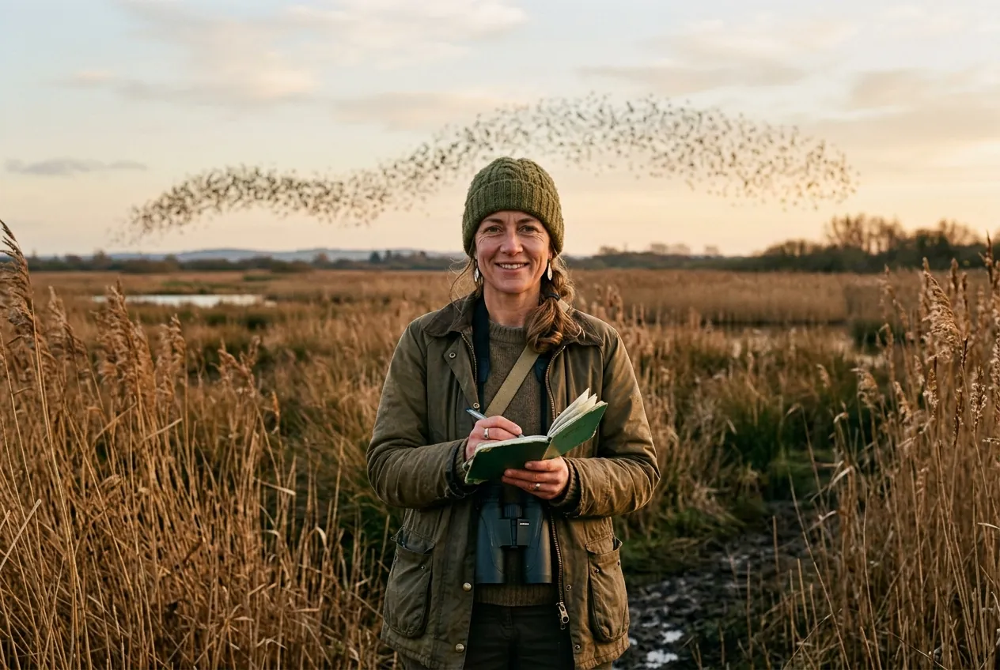
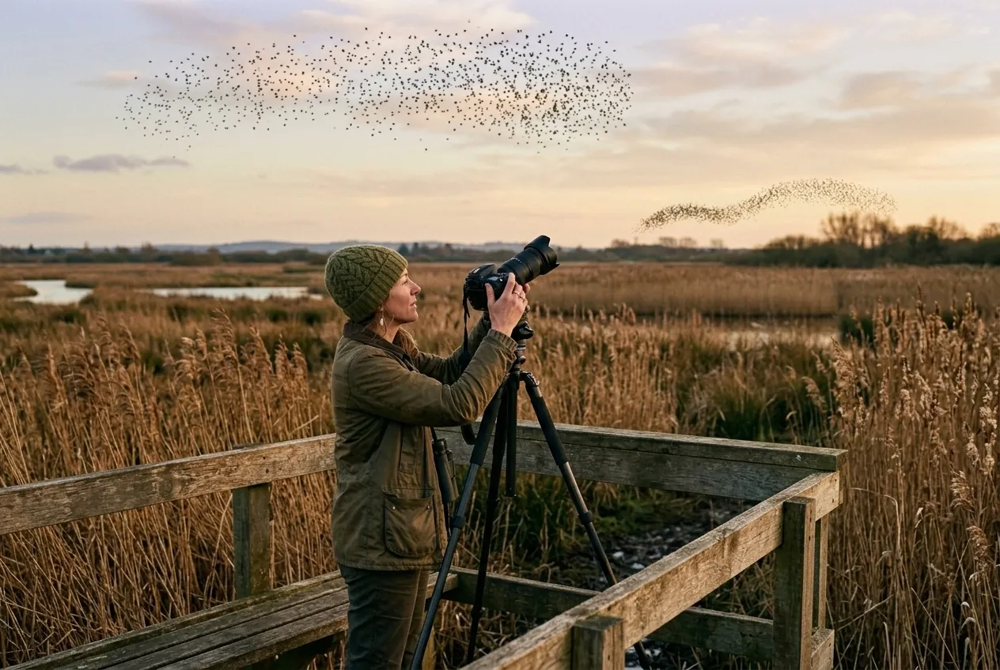
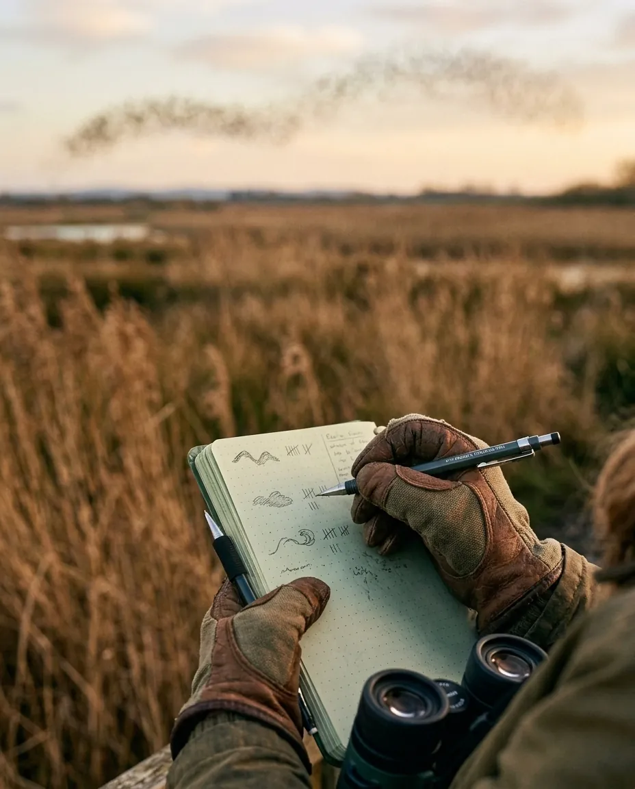
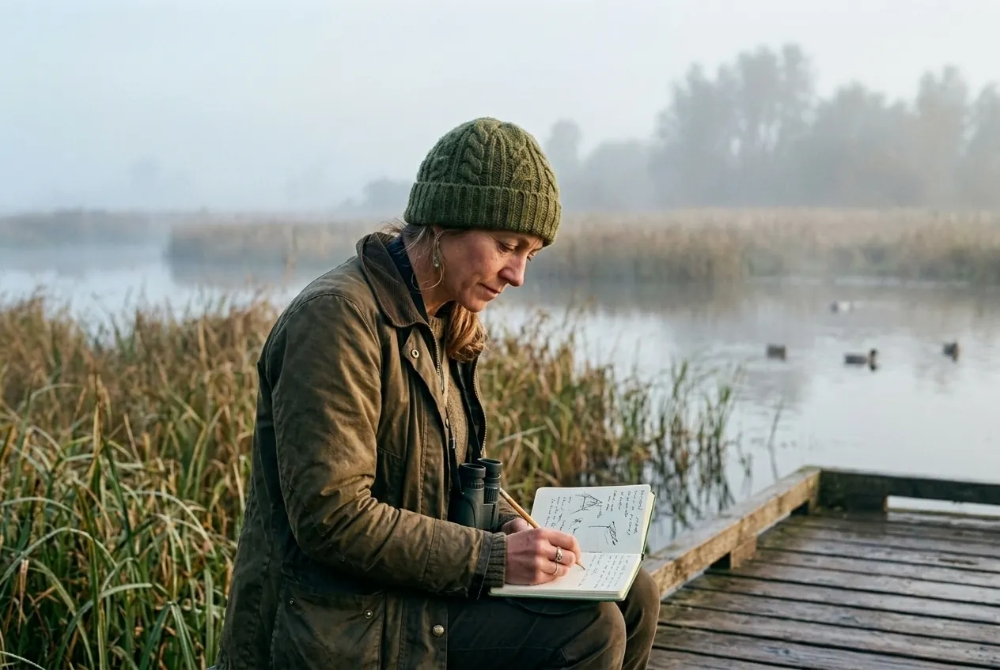
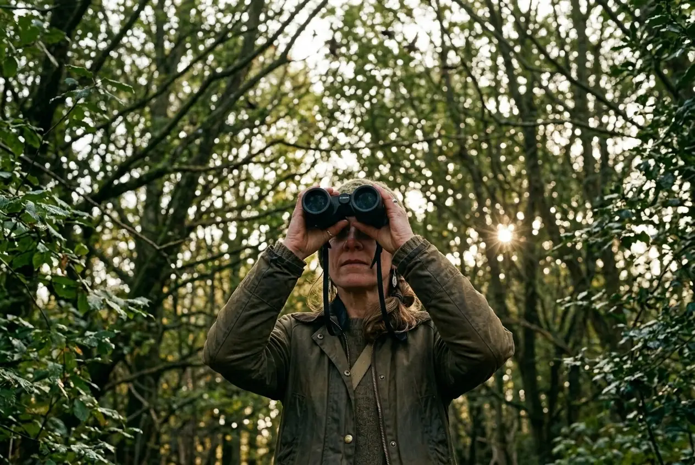

Ornithologist · Behavioural ecologist
Dr Imogen Hale
I study how a hundred thousand starlings turn as one, and what each bird is watching when they do.
Over a dusk sky and a reed bed, a simulated flock of starlings rolls and folds, and every few seconds forms the word Hale.
Nobody leads. Each bird watches seven.
There is no leader in a murmuration, and no plan. Studies of starling flocks over Rome found that each bird keeps track of about six or seven of its nearest neighbours, whether they are close by or far away. That is enough for a turn to sweep across thousands of birds.
Try it in a small model: change how many neighbours each bird watches and see what holds the flock together.
The flock is in 1 piece.
The roost comes in at dusk.
-

17 Nov · 16:18 · The Levels · 6°C, westerly 2
Counting a roost
The birds come in waves from every direction for about forty minutes before sunset. I count in blocks of a thousand, and I'm often wrong by a third.
-

3 Dec · 16:02 · The platform · 4°C, still
Three cameras, one flock
Cameras set apart on the same flock, synchronised, so that afterwards every bird can be placed in three dimensions and its neighbours counted rather than guessed.
-

Every evening · minute by minute
Shapes, sketched
The cameras can't tell me what a flock felt like, so I still draw it: the shape every minute, with a tally of how long each one holds.
-

12 Jan · 07:41 · The mere · 1°C, fog
Dawn, the quieter count
In the morning the roost lifts in a few minutes, and the counts are better than at dusk. A flask of coffee, the notebook, and nobody else on the jetty.
-

May to July · Woodland edges
When the flocks are gone
In spring the murmurations break up into pairs. I follow the same birds into hedges and woodland to their nests, and wait for autumn.
What I'm working on.
- 2019 –
Flocks in three dimensions
Synchronised cameras on the same flock, so that every bird can be rebuilt in three dimensions and its neighbours measured.
- 2016 –
The roost census
A volunteer network that counts the winter roosts across the Levels on the same Sunday every January.
- 2022 –
Hawk and flock
How a murmuration opens around a peregrine or a sparrowhawk, and how quickly it closes again. The pointer at the top of this page is that hawk.
- Ongoing
Talks and films
Public walks at dusk, school visits, and scientific advice for wildlife film crews.
Come and watch at dusk.
For talks, fieldwork collaborations and advice on filming flocks without disturbing the roost.